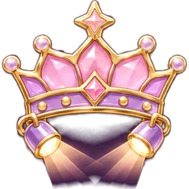
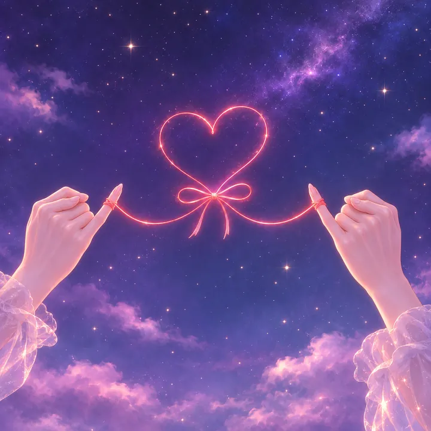

IDOL · TEST · HOUSE
追星心动测试馆
两个专为追星人准备的小测试
测完截图，晒给同担看

本命爱豆测试40 道题，测出你命中注定的本命类型8 种类型 · 约 6 分钟

追星缘分度测试填上你和本命的信息，演完两幕剧情，抽前世卡、系红线6 种关系剧本 · 约 5 分钟
仅供娱乐，结果不代表任何真实艺人
两个专为追星人准备的小测试
测完截图，晒给同担看


仅供娱乐，结果不代表任何真实艺人